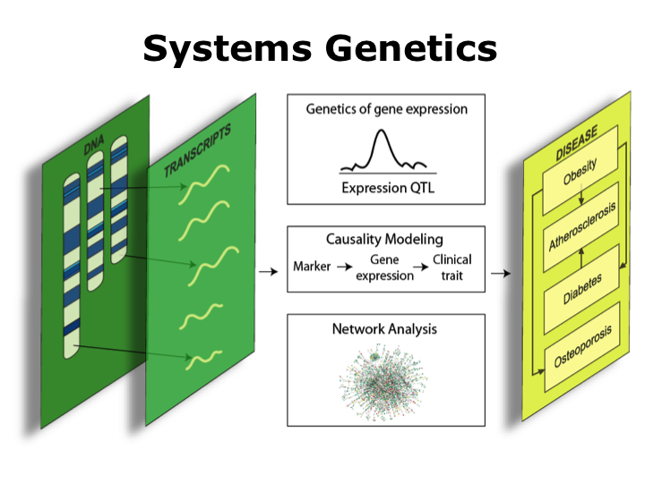
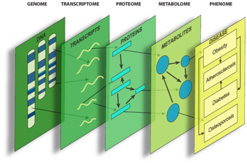
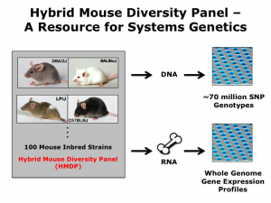
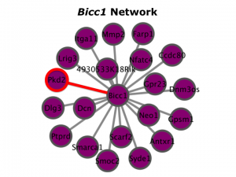
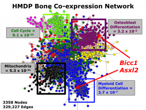

Our Approach: Systems Genetics
|  | Systems Genetics of Complex Skeletal PhenotypesSystems genetics seeks to understand how genetic information is integrated, organized and transmitted through cellular networks to impact cellular function/behavior. Much of our work in the lab uses systems genetics approaches that integrate genetic and transcriptome data to identify individual genes and gene networks influencing complex skeletal phenotypes. |
What is Systems Genetics?
|
Historically, geneticists have dissected the genetics of disease by directly identifying changes in DNA that alter disease-related phenotypes. This approach has successfully identified a whole host of genetic variants, and in some cases the underlying genes, that increase an individual’s risk of developing diseases such as obesity, atherosclerosis, diabetes and osteoporosis. However, this approach fails to provide insight on the cellular mechanisms altered by these variants or the larger gene networks within which they function. In recent years, new technologies have paved the way to investigate the genetic basis other cellular components in a massively parallel fashion and at unprecedented resolution. These advances have enabled the quantification of molecular phenotypes such as gene expression (referred to as the “transcriptome”), metabolites (metabolome) and proteins (proteome), on a genome-wide scale. These new tools provide geneticists with the opportunity uncover networks of interacting genetic variants, transcripts and proteins and to begin to understand how their perturbation leads to disease. |
|

Figure 1 (left). Disease-associated genetic variation elicits its influence by perturbing biological components and their interactions. Systems genetics can be used to identify these perturbations, and the genes and networks involved, and the mechanisms through which they lead to disease. (Copyright, University of Virginia Center for Publich Health Genomics) |
|
This new area of research is referred to as “Systems Genetics” and it seeks to understand complexity by combining the principles of systems biology and genetics to uncover connections between genotype and complex disease. Importantly, systems genetics attempts to explain the role of genetic variation in cellular function and disease from the perspective of the entire system, not simply from the level of individual genes. The Farber lab in the CPHG is using systems genetics to identify genes and biological processes that affect bone development. This research promises to lead to the identification of novel therapeutic targets that can be use to combat diseases such as osteoporosis. Information from the U.Va. Center for Public Health Genomics. Click here to learn more. |
Current Projects
|  |
Dissecting the genetic basis of complex bone phenotypes using systems genetics in the Hybrid Mouse Diversity Panel (HMDP).The HMDP is a novel high-resolution mouse mapping population that is ideal for systems genetics studies (Bennett et al. Genome Research. 2010 and Farber CR et al. PLoS Genetics. 2011). We are using systems genetics approaches in the HMDP to identify genes influencing complex skeletal traits such as bone density, morphology and microarchitecture. |
|  |
Elucidating the function of novel genes affecting skeletal traits identified in project #1.We are using RNAi in primary calvarial osteoblasts and transgenic and conditional knockout mice to study the role of genes identified in project #1. Our efforts are primarily focused on understanding the function of Bicadual C1 homolog (Bicc1) in the regulation of osteoblast differentiation and bone mass (Farber CR et al. Journal of Bone and Mineral Research. 2009). |
|  |
Elucidating transcriptional networks that play critical roles in the function of osteoblasts.We are appling Weighted Gene Co-expression Network Analysis to bone microarray data generated in the HMDP in order to reconstruct correlational networks. The objective of this work is to use network information to pinpoint key genes and gene-gene interactions that are critical for osteoblast function. |
CONNECT